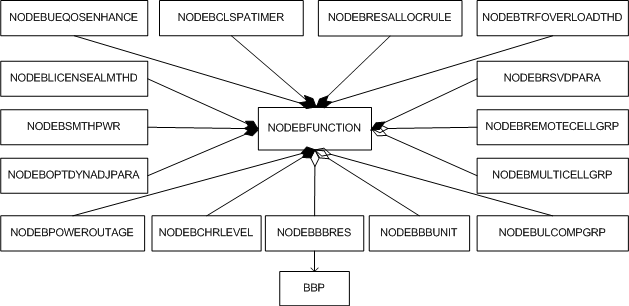

This section describes the functions and concepts of the NodeB managed object model (MOM) and also provides the MOM view and managed objects (MOs) related to the NodeB. The related MOs are mainly used for configurations of NodeBFunction-level parameters and radio parameters, including parameters that must be configured for activating an optional feature and NodeB-level parameters that must be configured for network maintenance and optimization.
Functions and Concepts
NodeBFunction
NodeBFunction is the root node of a NodeB function and is used to perform UMTS radio access functions, including air interface management, access control, resource allocation.
NodeB Baseband Resource
Resources required by a NodeB to process baseband services in a cell or on a carrier are collectively referred to as NodeB baseband resources. A multimode baseband processing board can provide baseband resources for different RATs. Adding NodeB baseband resource objects to the corresponding multimode baseband processing board provides baseband resources for cells served by a NodeB.
NodeB Baseband Unit
This function defines the ID of a BBU on the NodeB. By adjusting cell deployment policies of uplink resource groups, this function improves sharing of uplink CEs.
NodeB Multi-Carrier Cell Group
This function is used to establish the relationship between cells corresponding to two or more carriers enabled with the HSPA+ DC/MC-HSDPA or HSPA+ DC-HSUPA feature. In addition, this function allows a DC-HSDPA UE to simultaneously establish connections in two co-coverage intra-frequency cells on two adjacent carriers separately. This allows the UE to use cell resources of two carriers, thereby improving the peak throughput of the UE. Two adjacent carriers working at the 5 MHz frequency band can also provide uplink resources for the same UE, thereby improving the single-user peak rate for uplink data transmission and the average cell throughput.
NodeB Remote Cell Group
This function defines a resource group of remote coverage cells. It is used to configure and record whether a cell in a resource group is capable of remote coverage.
NodeB Uplink CoMP (Joint Reception)
UL CoMP uses uplink antennas of the host cell (primary cell) and neighboring cell (coordinating cell) in a UL CoMP cell pair to combine received signals, thereby obtaining uplink gains.
NodeB Resource Allocation Mode
This function defines the allocation mode of NodeB resources for access and the CS/PS user threshold for automatic cell reestablishment. The NodeB now supports two modes: handover performance first mode and capacity first mode.
NodeB License Alarm Threshold
This function defines the license alarm parameters, including the alarm reporting and clearing periods and thresholds. The license control items include the NodeB traffic and number of RRC connected UEs.
NodeB CHR Level
This function defines the level of details and the type of the call history record (CHR). Currently, the information level can be Normal or Detail, and the CHR types are classified into CHR for DPA users, CHR for UPA users, CHR for DPA users and UPA users, CHR for R99 users, and CHR for all users.
Intelligently Out of Service
This function is introduced to prevent service interruption caused by insufficient battery voltage, NodeB reset, or cell blocking. When one of these problems occurs, this function enables the NodeB to automatically reduce the pilot transmit power and hand over UEs to other GSM or UMTS cells, thereby preventing call drops.
Dynamic Voltage Adjustment
Based on the PA output power, this function adjusts the operating voltage of PAs and related clipping parameters of RF modules to improve the PA efficiency and reduce NodeB power consumption. However, with this function, the throughput of HSDPA services cannot increase quickly.
MOM View
MOM view is a subset of the NodeB MOM and provides MOs related to a NodeB.

In the NodeB MOM view, all MOs are attributed to the NodeBFUNCTION MO. These MOs are described as follows:
- NODEBBBRES defines NodeB baseband resources. Adding NodeB baseband resource objects to the associated multimode baseband processing board can provide baseband resources for NodeB carriers. One NODEBFUNCTION can be configured with a maximum of six NODEBBBRES MOs, and one NODEBBBRES MO must be bound to only one configured BBP.
- NODEBULCOMPGRP defines UL CoMP cell pairs on the NodeB.
- NODEBMULTICELLGRP defines a multi-carrier cell group. It is used to configure multi-carrier cells for the NodeB, including DC-HSDPA, DB-HSDPA, 3C-HSDPA, and DC-HSUPA cells.
- NODEBRESALLOCRULE defines the allocation mode of NodeB resources for access and the CS/PS user threshold for automatic cell reestablishment.
- NODEBBBUNIT defines the ID of a BBU that serves mutual-aid cells in an uplink resource group. The parameters configured in this MO are used to readjust cell deployment policies of uplink resource groups, thereby improving sharing of uplink CEs.
- NODEBOPTDYNADJPARA defines the switch for enabling Dynamic Voltage Adjustment and parameters related to this function.
- NODEBSMTHPWR defines the switch for enabling the smooth power change function. The switch, out-of-service duration, and power reduction steps configured in this MO are used to implement Intelligently Out of Service.
- NODEBLICENSEALMTHD defines the license alarm parameters, including the alarm reporting and clearing periods and thresholds. The license control items include the uplink CEs, downlink CEs, and signal processing capability of the NodeB.
- NODEBCHRLEVEL defines the CHR level. Parameters in this MO are used to configure the level of details and the type of the CHR.
- NODEBTRFOVERLOADTHD configures NodeB traffic overload alarm parameters, including the alarm reporting and clearing periods and thresholds.
- NODEBRSVDPARA defines reserved fields of a NodeBFunction. Reserved fields are used to configure switches for features to be added. This MO must be supported by the patch version. When a feature is added in the patch version, a reserved field can be configured to activate or deactivate this feature.